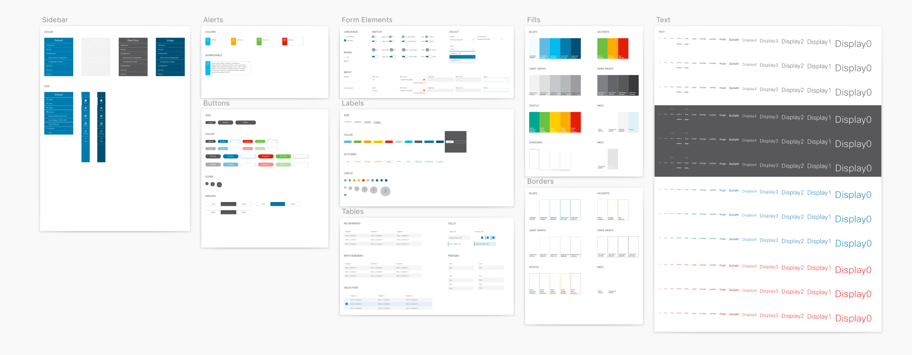
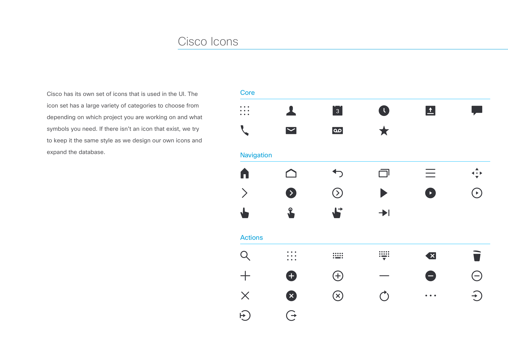
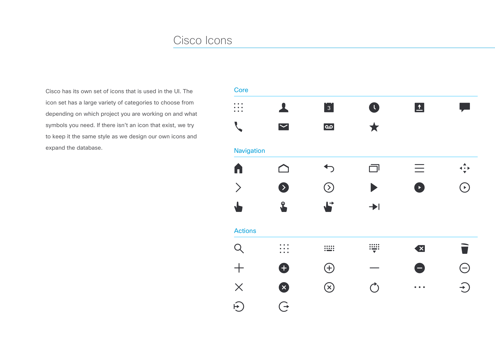

Cisco UI - Design System
 Design Overview : Concept
UI Design concept of dashboard. Purpose of this app is to gather internal data of users viewing the app on a daily bases.
Most employees have to check different data depending on their goals and needs within the company. Because of this, they frequently
engage with the Cisco brand to do business with other companies and work with their fellow co-workers on a variety of products.
So, what's the problem?
Cisco is a huge enterprise company with a large portfolio of products. Because of this, I want to design the Cisco UI and brand to make
it feel that teams design a product, they that it belongs to Cisco and the application or web project they are working on reflects the
Cisco brand and business goals.
The following are the core problems this project aims to solve, largely align with the cisco brand and UI:
• Transparency, we want the brand and ui to reflect the true concept of the cisco name,
to do that we need to look into the many ui elements and pattern that represent the brand.
• Core colors, represent the foundation of the look and feel, to acheive we need to look at
how color is used and how different color combinations relect the look and feel of Cisco while still being unique.
• Represenation of images, sometimes an image is worth a 1000 words
and because it is most of the time. Who is the person in the photo? How do they do business,
what kind of industry or we solving for for our services. I will tackle this problem by looking the images used with UI.
• Being modern in this day of technology, this means keeping up with the design and technical trends of today.
How do software elements and interaction design solve business and customer problems. Will dive deeper into that by exploring the design system.
Phase 1: Color Brand
Cisco uses cool colors to represent the technological side of business along witht he use of cool background elements such as businessmen,
nature, energetic people, global audience, while addressing the modernism of flat design, construction, and innovation. We want the brand
to have lasting affect on the UI, where it will be dislayed in all products.
Phase 2: Layout & Structure
To have a clean foundation, we need structure in our layouts and UI. Here is the basic elements needed
on the web, mobile, tablet, and other devices that use screen technology.
It is crucial to have a clean structure thats easy for users to play with
many visual elements. Clean and Simple is the goal to most pages.

Phase 3 : Core UI Elements
After looking at the concept and brand. Here I would dive into the important of the core ui elements that make up
most of Cisco’s application use thats often used on te web and mobile. These include buttons, icons, dropdown menus,
switches, alerts, loading elements, and key functions that give life to the application if it were to be used.
The core elements tie the design system together and a simple yet clean format.
 


Phase 4 : Design System solving business goals.
Sometimes in order for the Design System to work, it not only needs a beautiful functioning those applications. But people that drive it,
meaning the engineers, product managers, designers, researchers, and our respective business associates work together those business goals.
When team works together and create a project, collaboration happens and building of all levels including research, defining key stakeholders,
gathering data, building the user interface, and user experience. It helps tie together the design system. The feedback and innovation of
building new products is the goal of the cisco design system. The easy of use and consistency of the ui helps achieve business goals by
shipping out products that users need.
Phase 5 : Learnings and key takeaway
The design system helps gives a solid foundation of the general cisco brand and ui. But sometimes, we can’t use all elements in some use cases.
• Certain UI can be deviated depending on the concept and goal of application your building.
• In order to achieve innovation, sometimes its useful to try different colors and interactions.
• Design is always involving and nothign stays the same, I think its ideal to sometimes rebuild the system.
• Not all design elements can be used to solve every problem, so experimentation is crucial.